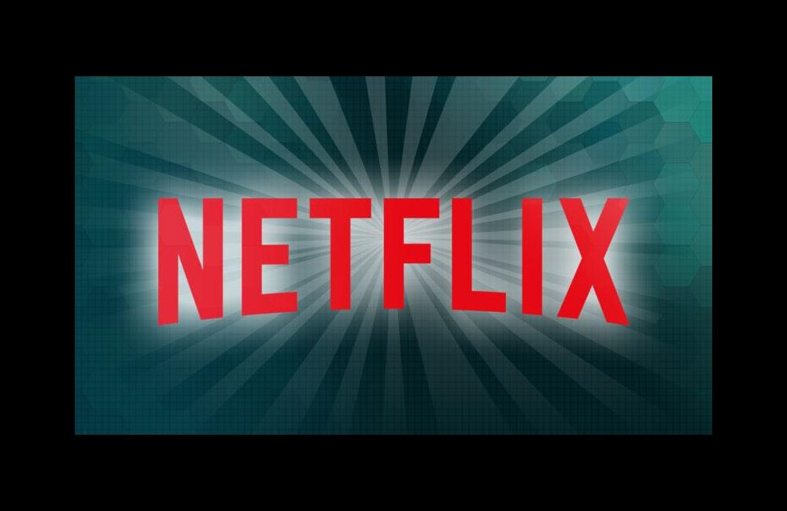

Netflix, Inc. is an American media-services provider and production company headquartered in Los Gatos, California, founded in 1997 by Reed Hastings and Marc Randolph in Scotts Valley, California. The company's primary business is its subscription-based streaming service which offers online streaming of a library of films and television programs, including those produced in-house. As of April 2019, Netflix had over 148 million paid subscriptions worldwide, including 60 million in the United States, and over 154 million subscriptions total including free trials. It is available worldwide except in mainland China, Syria, North Korea, and Crimea (due to US sanctions). The company also has offices in the Netherlands, Brazil, India, Japan, and South Korea. Netflix is a member of the Motion Picture Association (MPA).
Netflix's initial business model included DVD sales and rental by mail, but Hastings abandoned the sales about a year after the company's founding to focus on the initial DVD rental business. Netflix expanded its business in 2010 with the introduction of streaming media while retaining the DVD and Blu-ray rental business. The company expanded internationally in 2010 with streaming available in Canada, followed by Latin America and the Caribbean. Netflix entered the content-production industry in 2012, debuting its first series Lilyhammer.
Since 2012, Netflix has taken more of an active role as producer and distributor for both film and television series, and to that end, it offers a variety of "Netflix Original" content through its online library. By January 2016, Netflix services operated in more than 190 countries. Netflix released an estimated 126 original series and films in 2016, more than any other network or cable channel. Their efforts to produce new content, secure the rights for additional content, and diversify through 190 countries have resulted in the company racking up billions in debt: $21.9 billion as of September 2017, up from $16.8 billion from the previous year. $6.5 billion of this is long-term debt, while the remaining is in long-term obligations. In October 2018, Netflix announced it would raise another $2 billion in debt to help fund new content.
Netflix Movies
#REALITYHIGH September 8, 2017
13th October 7, 2016
13th: A Conversation with Oprah Winfrey & Ava DuVernay January 26, 2017
15 August March 29, 2019
1922 October 20, 2017
22 July October 10, 2018
5 Star Christmas December 7, 2018
6 Balloons April 6, 2018
6 Underground December 13, 2019
7 años October 28, 2016
A 3 Minute Hug October 28, 2019
A Christmas Prince November 17, 2017
A Christmas Prince: The Royal Baby December 5, 2019
A Christmas Prince: The Royal Wedding November 30, 2018
A Futile and Stupid Gesture January 26, 2018
A Tale of Two Kitchens May 22, 2019
A Very Murray Christmas December 4, 2015
After Maria May 24, 2019
After the Raid December 19, 2019
Alex Strangelove June 8, 2018
All in My Family May 3, 2019
Always Be My Maybe May 31, 2019
Amanda Knox September 30, 2016
Amateur April 6, 2018
American Factory August 21, 2019
American Factory: A Conversation with the Obamas August 21, 2019
American Son November 1, 2019
Anima June 27, 2019
Antoine Griezmann: The Making of a Legend March 21, 2019
Apostle October 12, 2018
ARQ September 16, 2016
Art of Conflict: The Murals of Northern Ireland[a] October 12, 2012
Audrie & Daisy September 23, 2016
Back to School August 30, 2019
Barbra: The Music, The Mem'ries, The Magic November 22, 2017
Barry December 16, 2016
Beasts of No Nation October 16, 2015
Beats June 19, 2019
Been So Long October 26, 2018
Benji March 16, 2018
Between Two Ferns: The Movie September 20, 2019
Bikram: Yogi, Guru, Predator November 20, 2019
Bird Box December 21, 2018
Birders September 25, 2019
Blame! May 20, 2017
Blockbuster January 24, 2018
Bomb Scared October 12, 2017
Brahman Naman July 7, 2016
Brené Brown: The Call to Courage April 19, 2019
Bright December 22, 2017
Brij Mohan Amar Rahe August 3, 2018
Burning Sands March 10, 2017
Calibre June 29, 2018
Cam November 16, 2018
Candy Jar April 27, 2018
Cargo May 18, 2018
Casting JonBenet April 28, 2017
Chasing Coral July 14, 2017
Chopsticks May 31, 2019
Christmas Inheritance December 15, 2017
City of Joy September 7, 2018
Clinical January 13, 2017
Coin Heist January 6, 2017
Come Sunday April 13, 2018
Como Caído del Cielo December 24, 2019
CounterPunch June 16, 2017
Crouching Tiger, Hidden Dragon: Sword of Destiny February 26, 2016
Cuba and the Cameraman November 24, 2017
Dancing with the Birds October 23, 2019
Dead Kids December 1, 2019
Death Note August 25, 2017
Deidra & Laney Rob a Train March 17, 2017
Derren Brown: Sacrifice October 19, 2018
Despite Everything May 3, 2019
Dolemite Is My Name October 25, 2019
Drive November 1, 2019
Dude April 20, 2018
E-Team October 24, 2014
Earthquake Bird November 15, 2019
El Camino Christmas December 8, 2017
El Camino: A Breaking Bad Movie October 11, 2019
El Pepe: A Supreme Life December 27, 2019
Eli October 18, 2019
Elisa & Marcela June 7, 2019
End Game May 4, 2018
Enter the Anime August 5, 2019
Evelyn September 10, 2019
Extinction July 27, 2018
Extremis September 13, 2016
Falling Inn Love August 29, 2019
Father of the Year July 20, 2018
Feminists: What Were They Thinking? October 12, 2018
Fire in Paradise November 1, 2019
Firebrand February 22, 2019
First Match March 30, 2018
First They Killed My Father September 15, 2017
Forgive Us Our Debts May 4, 2018
Fractured October 11, 2019
Frankenstein's Monster's Monster, Frankenstein July 16, 2019
Fyre: The Greatest Party That Never Happened January 18, 2019
Gaga: Five Foot Two September 22, 2017
Game Over, Man! March 23, 2018
Gerald's Game September 29, 2017
Get Me Roger Stone May 12, 2017
Ghosts of Sugar Land October 16, 2019
Girlfriend's Day February 14, 2017
Good Sam May 16, 2019
Grass Is Greener April 20, 2019
Handsome: A Netflix Mystery Movie May 5, 2017
Happy Anniversary March 30, 2018
Hello Privilege. It's Me, Chelsea September 13, 2019
Heroin(e) September 12, 2017
High Flying Bird February 8, 2019
Hold the Dark September 28, 2018
Holiday in the Wild November 1, 2019
Holiday Rush November 28, 2019
Homecoming: A Film by Beyoncé April 17, 2019
Hot Girls Wanted May 29, 2015
House Arrest November 15, 2019
How It Ends July 13, 2018
I Am Not an Easy Man April 13, 2018
I Am the Pretty Thing That Lives in the House October 28, 2016
I Don't Feel at Home in This World Anymore February 24, 2017
I'll Sleep When I'm Dead August 19, 2016
Ibiza May 25, 2018
iBoy January 27, 2017
Icarus August 4, 2017
Imperial Dreams February 3, 2017
In the Shadow of the Moon September 27, 2019
In the Tall Grass October 4, 2019
Into the Inferno October 28, 2016
Invader Zim: Enter the Florpus August 16, 2019
IO January 18, 2019
Irreplaceable You February 16, 2018
It Takes a Lunatic October 25, 2019
Jim and Andy – The Great Beyond November 17, 2017
Joan Didion: The Center Will Not Hold October 27, 2017
John Mulaney & the Sack Lunch Bunch December 24, 2019
Joshua: Teenager vs. Superpower May 26, 2017
Juanita March 8, 2019
Justin Timberlake + The Tennessee Kids October 12, 2016
Keith Richards: Under the Influence September 18, 2015
Kevin Hart's Guide to Black History February 8, 2019
Kingdom of Us October 13, 2017
Klaus November 15, 2019
Knock Down the House May 1, 2019
Ladies First March 8, 2018
Laerte-se May 19, 2017
Lessons from a School Shooting: Notes from Dunblane September 28, 2018
Let It Snow November 8, 2019
Life Overtakes Me June 14, 2019
Like Father August 3, 2018
Lionheart January 4, 2019
Little Evil September 1, 2017
Little Miss Sumo October 28, 2019
Long Shot September 29, 2017
Lorena, Light-Footed Woman November 20, 2019
Los Tigres del Norte at Folsom Prison September 15, 2019
Loudon Wainwright III: Surviving Twin November 13, 2018
Love per Square Foot February 14, 2018
Lust Stories June 15, 2018
Marriage Story December 6, 2019
Mascots October 13, 2016
Mercury 13 April 20, 2018
Mercy November 22, 2016
Michael Bolton's Big, Sexy Valentine's Day Special February 7, 2017
Mission Blue August 15, 2014
Mitt January 24, 2014
Mowgli: Legend of the Jungle December 7, 2018
Murder Mystery June 14, 2019
Music Teacher April 19, 2019
Mute February 23, 2018
My Beautiful Broken Brain March 18, 2016
My Own Man March 6, 2015
Naked August 11, 2017
Nappily Ever After September 21, 2018
Next Gen September 7, 2018
Nobody Speak: Trials of the Free Press June 23, 2017
Okja June 28, 2017
On My Skin September 12, 2018
One of Us October 20, 2017
Otherhood August 2, 2019
Our Planet - Behind the Scenes August 4, 2019
Our Souls at Night September 29, 2017
Out of Many, One December 12, 2018
Outlaw King November 9, 2018
Paddleton February 22, 2019
Paradox March 23, 2018
Parchis: The Documentary July 10, 2019
Paris Is Us February 22, 2019
Pee-wee's Big Holiday March 18, 2016
Period. End of Sentence. February 12, 2019
Point Blank July 12, 2019
Polar January 25, 2019
Porta dos Fundos: The First Temptation of Christ December 3, 2019
Porta dos Fundos: The Last Hangover December 21, 2018
Print the Legend September 26, 2014
Private Life October 5, 2018
Quincy September 21, 2018
Rajma Chawal November 30, 2018
Ram Dass, Going Home April 6, 2018
Rattlesnake October 25, 2019
Rebirth July 15, 2016
Recovery Boys June 29, 2018
Resurface September 1, 2017
Reversing Roe September 13, 2018
Rim of the World May 24, 2019
Rocko's Modern Life: Static Cling August 9, 2019
Rodney King April 28, 2017
Rolling Thunder Revue: A Bob Dylan Story by Martin Scorsese June 12, 2019
Roma December 14, 2018
Roxanne Roxanne March 23, 2018
Sand Castle April 21, 2017
Sandy Wexler April 14, 2017
Saving Capitalism November 21, 2017
Secret Obsession July 18, 2019
See You Yesterday May 17, 2019
Seeing Allred February 9, 2018
Set It Up June 15, 2018
Seventeen October 18, 2019
Sextuplets August 16, 2019
Shimmer Lake June 9, 2017
Shirkers October 26, 2018
Sierra Burgess Is a Loser September 7, 2018
Sky Ladder: The Art of Cai Guo-Qiang October 14, 2016
Small Crimes April 28, 2017
Someone Great April 19, 2019
Sometimes May 1, 2018
Soni January 18, 2019
Special Correspondents April 29, 2016
Spectral December 9, 2016
Springsteen on Broadway December 16, 2018
Step Sisters January 19, 2018
Still Laugh-In: The Stars Celebrate May 14, 2019
Street Flow October 12, 2019
Strong Island September 15, 2017
Struggle: The Life and Lost Art of Szukalski December 21, 2018
Sturgill Simpson Presents: Sound & Fury September 27, 2019
Take the 10 January 20, 2017
Take Your Pills March 16, 2018
Tall Girl September 13, 2019
Tallulah July 29, 2016
TAU June 29, 2018
Taylor Swift's Reputation Stadium Tour December 31, 2018
Team Foxcatcher April 29, 2016
Tell Me Who I Am October 18, 2019
The After Party August 24, 2018
The American Meme December 7, 2018
The Angel September 14, 2018
The App December 26, 2019
The Babysitter October 13, 2017
The Ballad of Buster Scruggs November 16, 2018
The Battered Bastards of Baseball July 11, 2014
The Black Godfather June 7, 2019
The Bleeding Edge July 27, 2018
The Christmas Chronicles November 22, 2018
The Cloverfield Paradox February 4, 2018
The Crystal Calls Making the Dark Crystal: Age of Resistance August 31, 2019
The Death and Life of Marsha P. Johnson October 6, 2017
The Dirt March 22, 2019
The Discovery March 31, 2017
The Do-Over May 27, 2016
The Edge of Democracy June 19, 2019
The Forest of Love October 11, 2019
The Fundamentals of Caring June 24, 2016
The Great Hack July 24, 2019
The Highwaymen March 29, 2019
The Holiday Calendar November 2, 2018
The Incredible Jessica James July 28, 2017
The Irishman November 27, 2019
The Irishman: In Conversation November 27, 2019
The Ivory Game November 4, 2016
The Killer November 10, 2017
The King November 1, 2019
The Kissing Booth May 11, 2018
The Knight Before Christmas November 21, 2019
The Land of Steady Habits September 14, 2018
The Last Laugh January 11, 2019
The Last Summer May 3, 2019
The Laundromat October 18, 2019
The Legacy of a Whitetail Deer Hunter July 6, 2018
The Legend of Cocaine Island March 29, 2019
The Lonely Island Presents: The Unauthorized Bash Brothers Experience May 23, 2019
The Man Without Gravity November 1, 2019
The Mars Generation May 5, 2017
The Meyerowitz Stories (New and Selected) October 13, 2017
The Most Assassinated Woman in the World September 7, 2018
The Most Hated Woman in America March 24, 2017
The Night Comes for Us October 19, 2018
The Open House January 19, 2018
The Other One: The Long Strange Trip of Bob Weir May 22, 2015
The Other Side of the Wind November 2, 2018
The Outsider March 9, 2018
The Package August 10, 2018
The Perfect Date April 12, 2019
The Perfection May 24, 2019
The Polka King January 12, 2018
The Princess Switch November 16, 2018
The Rachel Divide April 27, 2018
The Red Sea Diving Resort July 31, 2019
The Ridiculous 6 December 11, 2015
The Road to El Camino: A Breaking Bad Movie October 29, 2019
The Short Game December 12, 2013
The Siege of Jadotville October 7, 2016
The Square January 17, 2014
The Trader February 9, 2018
The Two Popes December 20, 2019
The Week Of April 27, 2018
The White Helmets September 16, 2016
They'll Love Me When I'm Dead November 2, 2018
Tig July 17, 2015
To All the Boys I've Loved Before August 17, 2018
To Each, Her Own June 24, 2018
To the Bone July 14, 2017
Tony Robbins: I Am Not Your Guru July 15, 2016
Tramps April 21, 2017
Travis Scott: Look Mom I Can Fly August 28, 2019
Triple Frontier March 13, 2019
True Memoirs of an International Assassin November 11, 2016
Two Catalonias September 28, 2018
Unicorn Store April 5, 2019
Upstarts October 18, 2019
Velvet Buzzsaw February 1, 2019
Virunga November 7, 2014
Voyeur December 1, 2017
Walk. Ride. Rodeo. March 8, 2019
War Machine May 26, 2017
What Happened, Miss Simone? June 26, 2015
Wheelman October 20, 2017
When We First Met February 9, 2018
Who Would You Take to a Deserted Island? April 12, 2019
Win It All April 7, 2017
Wine Country May 10, 2019
Winter on Fire: Ukraine's Fight for Freedom October 9, 2015
XOXO August 26, 2016
Zion August 10, 2018
Netflix Series
13 Reasons Why March 31, 2017
13 Reasons Why: Beyond the Reasons March 31, 2017
1994 May 17, 2019
3Below: Tales of Arcadia December 21, 2018
7 Days Out December 21, 2018
72 Dangerous Animals: Asia August 10, 2018
72 Dangerous Animals: Latin America December 22, 2017
7SEEDS June 28, 2019
A Little Help with Carol Burnett May 4, 2018
A Series of Unfortunate Events January 13, 2017
A.I.C.O. -Incarnation- March 9, 2018
Abstract: The Art of Design February 10, 2017
Afflicted August 10, 2018
After Life March 8, 2019
Aggretsuko April 20, 2018
Alexa & Katie March 23, 2018
Alias Grace November 3, 2017
All About the Washingtons August 10, 2018
All Hail King Julien December 19, 2014
All Hail King Julien: Exiled May 12, 2017
Altered Carbon February 2, 2018
Amazing Interiors July 20, 2018
American Vandal September 15, 2017
Anne with an E May 12, 2017
Another Life July 25, 2019
Arashi’s Diary Voyage December 31, 2019
Archibald's Next Big Thing September 6, 2019
Armistead Maupin's Tales of the City (series 4) June 7, 2019
Arrested Development (seasons 4–5) May 26, 2013
Ask the StoryBots August 12, 2016
Astronomy Club: The Sketch Show December 6, 2019
Atelier December 1, 2015
Atypical August 11, 2017
Awake: The Million Dollar Game June 14, 2019
B: The Beginning March 2, 2018
Baki June 25, 2018
Basketball or Nothing August 2, 2019
Battlefish September 21, 2018
Beat Bugs August 3, 2016
Best.Worst.Weekend.Ever. October 19, 2018
Between May 21, 2015
Beyond Stranger Things October 27, 2017
Big Mouth September 29, 2017
Bill Nye Saves the World April 21, 2017
Black Earth Rising January 25, 2019
Black Mirror (series 3–5) October 21, 2016
Black Summer April 11, 2019
Bloodline March 20, 2015
Bobby Kennedy for President April 27, 2018
Boca Juniors Confidential September 14, 2018
BoJack Horseman August 22, 2014
Bonding April 24, 2019
Bottersnikes and Gumbles August 19, 2016
Brainchild November 2, 2018
Breakfast, Lunch & Dinner October 23, 2019
Broken November 27, 2019
Buddy Thunderstruck March 10, 2017
Busted! May 4, 2018
Cannon Busters August 15, 2019
Captive December 9, 2016
Car Masters: Rust to Riches September 14, 2018
Care Bears and Cousins November 6, 2015
Carmen Sandiego January 18, 2019
Castlevania July 7, 2017
Chambers April 26, 2019
Charlie's Colorforms City March 22, 2019
Chasing Cameron December 27, 2016
Chef's Table April 26, 2015
Chef's Table: France September 2, 2016
Chelsea May 11, 2016
Chelsea Does January 23, 2016
Chilling Adventures of Sabrina October 26, 2018
Coach Snoop February 2, 2018
Collateral March 9, 2018
Comedians in Cars Getting Coffee (seasons 10–11) July 6, 2018
Conversations with a Killer: The Ted Bundy Tapes January 24, 2019
Cooked February 19, 2016
Cooking on High June 22, 2018
Crazyhead December 16, 2016
Cricket Fever: Mumbai Indians March 1, 2019
Criminal: UK September 20, 2019
Cupcake & Dino: General Services July 27, 2018
Damnation February 1, 2018
Dancing Queen October 5, 2018
Daredevil April 10, 2015
Dark Tourist July 20, 2018
Dating Around February 14, 2019
Daughters of Destiny July 28, 2017
Dawn of the Croods December 24, 2015
Daybreak October 24, 2019
Dead to Me May 3, 2019
Dear White People April 28, 2017
Death by Magic November 30, 2018
Degrassi: Next Class January 15, 2016
Designated Survivor (season 3) June 7, 2019
Designated Survivor: 60 Days July 1, 2019
Devilman Crybaby January 5, 2018
Diagnosis August 16, 2019
Dino Girl Gauko November 22, 2019
Dinotrux August 14, 2015
Dinotrux Supercharged November 10, 2017
Dirk Gently's Holistic Detective Agency December 11, 2016
Dirty Money January 26, 2018
Disenchantment August 17, 2018
Disjointed August 25, 2017
Dogs November 16, 2018
Dolly Parton's Heartstrings November 22, 2019
Don't F**k With Cats: Hunting an Internet Killer December 18, 2019
Dope December 22, 2017
Dracula January 4, 2020
Dragons: Race to the Edge June 26, 2015
Dragons: Rescue Riders September 27, 2019
Drug Lords January 19, 2018
Drug Squad: Costa del Sol October 25, 2019
Easy September 22, 2016
Edgar Rice Burroughs' Tarzan and Jane January 6, 2017
El Chapo June 16, 2017
Erased December 15, 2017
Ever After High May 30, 2013
Everything Sucks! February 16, 2018
Evil Genius: The True Story of America's Most Diabolical Bank Heist May 11, 2018
Examination of Conscience January 25, 2019
Exhibit A June 28, 2019
Explained May 23, 2018
Extreme Engagement July 12, 2019
F Is for Family December 18, 2015
Family Reunion July 10, 2019
Fast & Furious Spy Racers December 26, 2019
Fastest Car April 6, 2018
Fearless August 19, 2016
FightWorld October 12, 2018
Fire Chasers September 8, 2017
First and Last September 7, 2018
First Team: Juventus February 16, 2018
Five Came Back March 31, 2017
Flaked March 11, 2016
Flinch May 3, 2019
Flint Town March 2, 2018
Follow This August 23, 2018
Formula 1: Drive to Survive March 8, 2019
Four Seasons in Havana September 12, 2016
Free Rein June 22, 2017
Friends from College July 14, 2017
Frontier January 20, 2017
Fuller House February 26, 2016
Gilmore Girls: A Year in the Life November 25, 2016
Girlboss April 21, 2017
Girls Incarcerated March 2, 2018
Glitch (series 2–3) November 28, 2017
GLOW June 23, 2017
Go! Go! Cory Carson January 4, 2020
Godless November 22, 2017
Good Morning Call May 13, 2016
Grace and Frankie May 8, 2015
Green Eggs and Ham November 8, 2019
Greenhouse Academy September 8, 2017
Gypsy June 30, 2017
H2O: Mermaid Adventures May 22, 2015
Happy Jail August 14, 2019
Harvey Girls Forever! June 29, 2018
Haters Back Off October 14, 2016
Haunted October 19, 2018
Hello Ninja November 1, 2019
Hemlock Grove April 19, 2013
Hero Mask December 3, 2018
Hibana: Spark June 2, 2016
Hilda September 21, 2018
Hip-Hop Evolution (seasons 2–3) October 19, 2018
Home: Adventures with Tip & Oh July 29, 2016
Hot Girls Wanted: Turned On April 21, 2017
House of Cards February 1, 2013
Huge in France April 12, 2019
Hyperdrive August 21, 2019
I Am a Killer August 3, 2018
I Think You Should Leave with Tim Robinson April 23, 2019
I'm with the Band: Nasty Cherry November 15, 2019
Insatiable August 10, 2018
Inside Bill's Brain: Decoding Bill Gates September 20, 2019
Inside the Real Narcos December 14, 2018
Inside the World’s Toughest Prisons (seasons 2–3) July 6, 2018
Interior Design Masters October 18, 2019
Iron Fist March 17, 2017
It's Bruno! May 17, 2019
Jack Whitehall: Travels with My Father September 22, 2017
Jailbirds May 10, 2019
Jessica Jones November 20, 2015
Julie's Greenroom March 17, 2017
Justin Time GO! June 24, 2016
Kantaro: The Sweet Tooth Salaryman July 7, 2017
Kazoops! September 2, 2016
Kengan Ashura July 31, 2019
Kevin Hart: Don't F**k This Up December 27, 2019
Killer Ratings May 31, 2019
Kiss Me First June 29, 2018
Knights of the Zodiac: Saint Seiya July 19, 2019
Kong: King of the Apes April 15, 2016
Kulipari: An Army of Frogs September 2, 2016
Kulipari: Dream Walker November 20, 2018
Lady Dynamite May 20, 2016
Larry Charles' Dangerous World of Comedy February 15, 2019
Larva Island October 19, 2018
Last Chance U July 29, 2016
Legend Quest February 24, 2017
Legend Quest: Masters of Myth October 5, 2019
Lego Bionicle: The Journey to One March 4, 2016
Lego Elves: Secrets of Elvendale September 1, 2017
Lego Friends: The Power of Friendship March 4, 2016
Levius November 28, 2019
Lilyhammer February 6, 2012
Little Things (season 2–3) October 5, 2018
Living Undocumented October 2, 2019
Living with Yourself October 18, 2019
Llama Llama January 26, 2018
Locke & Key February 7, 2020
Longmire (seasons 4–6) September 10, 2015
Losers March 1, 2019
Lost & Found Music Studios April 1, 2016
Lost in Space April 13, 2018
Lost Song March 31, 2018
Love February 19, 2016
Love, Death & Robots March 15, 2019
Lovesick (series 2–3) November 17, 2016
Lucifer (season 4) May 8, 2019
Luke Cage September 30, 2016
Luna Petunia December 9, 2016
Luna Petunia: Return to Amazia February 2, 2018
Lunatics April 19, 2019
Made in Mexico September 28, 2018
Magic for Humans August 17, 2018
Making a Murderer December 18, 2015
Malibu Rescue: The Series June 3, 2019
Maniac September 21, 2018
Maradona in Mexico November 13, 2019
Marching Orders August 3, 2018
Marco Polo December 12, 2014
Master of None November 6, 2015
MeatEater (seasons 7–8) October 2, 2018
Medal of Honor November 9, 2018
Merry Happy Whatever November 28, 2019
Messiah January 1, 2020
Midnight Diner (seasons 4–5) October 21, 2016
Mighty Little Bheem April 12, 2019
Mighty Little Bheem: Diwali October 18, 2019
Million Yen Women August 15, 2017
Mindhunter October 13, 2017
Mob Psycho 100 January 12, 2018
Money Heist (part 3) July 19, 2019
Motown Magic November 20, 2018
Mr. Iglesias June 21, 2019
Murder Mountain December 28, 2018
My Next Guest Needs No Introduction with David Letterman January 12, 2018
Mystery Science Theater 3000: The Return April 14, 2017
Nailed It! March 9, 2018
Nailed It! France October 25, 2019
Nailed It! Holiday December 7, 2018
Nailed It! Mexico February 8, 2019
Nailed It! Spain October 25, 2019
Narcos August 28, 2015
Narcos: Mexico November 16, 2018
Narcoworld: Dope Stories November 22, 2019
Neo Yokio September 22, 2017
Netflix Presents: The Characters March 11, 2016
Nightflyers February 1, 2019
No Good Nick April 15, 2019
No Time for Shame November 19, 2019
Norm Macdonald Has a Show September 14, 2018
Northern Rescue March 1, 2019
November 13: Attack on Paris June 1, 2018
October Faction January 23, 2020[32]
On My Block March 16, 2018
One Day at a Time January 6, 2017
Orange Is the New Black July 11, 2013
Our Planet April 5, 2019
Ozark July 21, 2017
Paquita Salas (seasons 2–3) June 29, 2018
Paradise PD August 31, 2018
Paranoid November 17, 2016
Patriot Act with Hasan Minhaj October 28, 2018
Perfume December 21, 2018
Pine Gap December 7, 2018
Pinky Malinky January 1, 2019
Popples October 30, 2015
Prank Encounters October 25, 2019
Prince of Peoria November 16, 2018
Project Mc2 August 7, 2015
QB1: Beyond the Lights February 13, 2017
Queen Sono February 28, 2020[35]
Queer Eye February 7, 2018
Queer Eye: We're in Japan! November 1, 2019
Raising Dion October 4, 2019
Rapture March 30, 2018
Real Rob (season 2) September 29, 2017
Requiem March 23, 2018
Rhythm + Flow October 9, 2019
Richie Rich February 20, 2015
Rilakkuma and Kaoru April 19, 2019
Robozuna October 25, 2018
Roman Empire November 11, 2016
Rotten January 5, 2018
Russian Doll February 1, 2019
Safe May 10, 2018
Salt, Fat, Acid, Heat October 11, 2018
Samurai Gourmet March 17, 2017
Santa Clarita Diet February 3, 2017
Seis Manos October 3, 2019
Self Made: Inspired by The Life of Madam C.J. Walker[36] March 20, 2020[37]
Selling Sunset March 22, 2019
Sense8 June 5, 2015
Seven Seconds February 23, 2018
Sex Education January 11, 2019
Sex, Explained January 2, 2020
Shadow March 8, 2019
She-Ra and the Princesses of Power November 13, 2018
She's Gotta Have It November 23, 2017
Shot in the Dark November 17, 2017
Singapore Social November 22, 2019
Skylanders Academy October 28, 2016
Slasher (season 3) May 23, 2019
Somebody Feed Phil January 12, 2018
Soundtrack December 18, 2019
Special April 12, 2019
Spinning Out January 1, 2020
Spirit Riding Free May 5, 2017
Spirit Riding Free: Pony Tales August 9, 2019
Spy Kids: Mission Critical April 20, 2018
Star Wars: The Clone Wars (season 6) March 7, 2014
Stay Here August 17, 2018
Stranger Things July 15, 2016
Street Food April 26, 2019
Stretch Armstrong and the Flex Fighters November 17, 2017
Styling Hollywood August 30, 2019
Sugar Rush July 13, 2018
Sugar Rush Christmas November 29, 2019
Sunderland 'Til I Die December 14, 2018
Super Drags November 9, 2018
Super Monsters October 13, 2017
Super Monsters Monster Pets June 7, 2019
Sword Gai: The Animation March 23, 2018
Taco Chronicles July 12, 2019
Team Kaylie September 23, 2019
Terrorism Close Calls October 26, 2018
The Adventures of Puss in Boots January 16, 2015
The Alcàsser Murders June 14, 2019
The Bonfire of Destiny December 26, 2019
The Boss Baby: Back in Business April 6, 2018
The Break with Michelle Wolf May 27, 2018
The Chef Show June 7, 2019
The Circle January 1, 2020
The Confession Killer December 6, 2019
The Confession Tapes September 8, 2017
The Crown November 4, 2016
The Cuba Libre Story December 8, 2016
The Curious Creations of Christine McConnell October 12, 2018
The Dark Crystal: Age of Resistance August 30, 2019
The Day I Met El Chapo October 20, 2017
The Defenders August 18, 2017
The Devil Next Door November 4, 2019
The Disappearance of Madeleine McCann March 15, 2019
The Disastrous Life of Saiki K.: Reawakened December 30, 2019
The Dragon Prince September 14, 2018
The End of the F***ing World January 5, 2018
The Epic Tales of Captain Underpants July 13, 2018
The Family August 9, 2019
The Final Table November 20, 2018
The Fix December 14, 2018
The Get Down August 12, 2016
The Good Cop September 21, 2018
The Haunting October 12, 2018
The Hollow June 8, 2018
The I-Land September 12, 2019
The Innocent Man December 14, 2018
The Innocents August 24, 2018
The Joel McHale Show with Joel McHale February 18, 2018
The Keepers May 19, 2017
The Killing (season 4) August 1, 2014
The Kominsky Method November 16, 2018
The Last Czars July 3, 2019
The Last Kids on Earth September 17, 2019
The Last Kingdom (series 2–3) May 5, 2017
The Letdown April 21, 2018
The Magic School Bus Rides Again September 29, 2017
The Mind, Explained September 12, 2019
The Movies That Made Us November 29, 2019
The Mr. Peabody & Sherman Show October 9, 2015
The New Legends of Monkey April 27, 2018
The OA December 16, 2016
The Order March 7, 2019
The Politician September 27, 2019
The Ponysitters Club August 10, 2018
The Punisher November 17, 2017
The Ranch April 1, 2016
The Society May 10, 2019
The Spy September 6, 2019
The Staircase (3 episodes) June 8, 2018
The Stranger January 30, 2020[33]
The Toys That Made Us December 22, 2017
The Umbrella Academy February 15, 2019
The Who Was? Show May 11, 2018
The Witcher December 20, 2019
The Worst Witch July 21, 2017
Tidelands December 14, 2018
Tidying Up with Marie Kondo January 1, 2019
Tijuana April 5, 2019
Top Boy (series 3) September 13, 2019
Trailer Park Boys (seasons 8–12) September 5, 2014
Trailer Park Boys Out of the Park: Europe October 28, 2016
Trailer Park Boys Out of the Park: USA November 24, 2017
Trailer Park Boys: The Animated Series March 31, 2019
Traitors March 29, 2019
Travelers December 23, 2016
Travelers (season 3) December 14, 2018
Trigger Warning with Killer Mike January 18, 2019
Trinkets June 14, 2019
Trollhunters: Tales of Arcadia December 23, 2016
Trolls: The Beat Goes On! January 19, 2018
Troy: Fall of a City April 6, 2018
True and the Rainbow Kingdom August 11, 2017
True: Magical Friends June 15, 2018
True: Wonderful Wishes June 15, 2018
Tuca & Bertie May 3, 2019
Turbo Fast December 24, 2013
Turn Up Charlie March 15, 2019
Twelve Forever July 29, 2019
Ugly Delicious February 23, 2018
Ultimate Beastmaster February 24, 2017
Ultraman April 1, 2019
Unbelievable September 13, 2019
Unbreakable Kimmy Schmidt March 6, 2015
Undercover May 3, 2019
Unnatural Selection October 18, 2019
V Wars December 5, 2019
Vai Anitta November 16, 2018
VeggieTales in the City February 24, 2017
VeggieTales in the House November 26, 2014
Virgin River December 6, 2019
Voltron: Legendary Defender June 10, 2016
W/ Bob & David November 13, 2015
Wanderlust October 19, 2018
Watership Down December 23, 2018
We're Lalaloopsy January 10, 2017
Westside November 9, 2018
Wet Hot American Summer: First Day of Camp July 31, 2015
Wet Hot American Summer: Ten Years Later August 4, 2017
What/If May 24, 2019
When They See Us May 31, 2019
White Rabbit Project December 9, 2016
Who Killed Little Gregory? November 20, 2019
Wild Wild Country March 16, 2018
Word Party July 8, 2016
World of Winx November 4, 2016
Wormwood December 15, 2017
Wu Assassins August 8, 2019
YooHoo to the Rescue March 15, 2019
You (season 2) December 26, 2019
You vs. Wild April 10, 2019